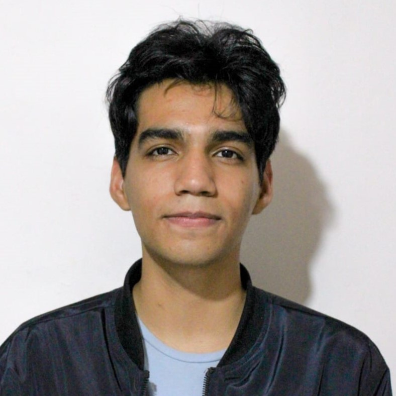

Jesús Gabriel Parra Dugarte
Mi nombre se puede leer en el título, nací el 19 de diciembre de 2003. Como ingeniero de sistemas, mis expectativas profesionales están enfocadas en seguir perfeccionando mis habilidades en programación y diseño, Además, deseo continuar mis estudios para mantenerme actualizado en las nuevas tecnologías y eventualmente compartir mis conocimientos como profesor universitario, contribuyendo a la formación de futuros profesionales en el campo de la ingeniería y el desarrollo de software.